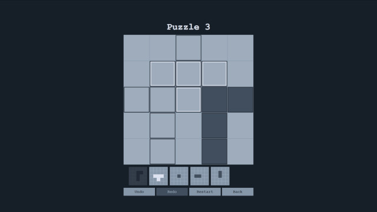
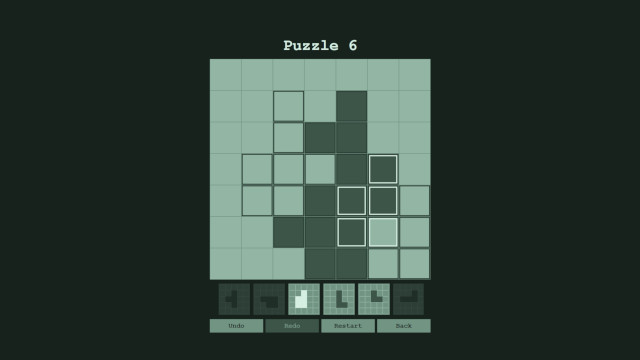
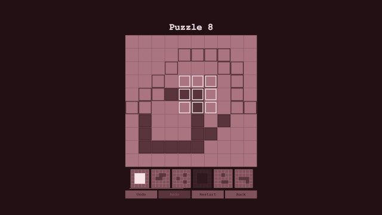

Flipxel
2023
{kind=link}
Flipxel is rooted in two inspirations. First, I wanted to make a game similar to nonograms (Picross), which I think is a beautiful design. Second, I had been thinking about what games designed with the philosophy of functional programming might look like. This is not about creating conventional games with a functional programming lannguage, but rather applying the philsophy of determinism and non-mutable state as a constraint on game design. Flipxel is the end result: it is a web game created in Typescript and React about flipping tiles with pieces to build images.
I had a half finished prototype created in vanilla Javascript, but ended up moving to React since I thought its structure better fit the functional game philosophy. I had also recently been using React heavily in my job, so I thought it would be interesting to see how it would improve my workflow to use something familiar. In general, it is pretty unconventional to use React for game development. In the end, I was able to create a web game I could host statically in GitHub. There are 90 default levels. A level editor and the ability to load level packs is also included.
The overall design of Flipxel I am proud of. It is simple and satisfying like nonograms, and has some pretty interesting edge rules, such as flipping tiles and placing the tile pieces partially off the board. Setting up the game as a progressive web app (PWA) to be playable as a separate experience from the browser on mobile was super easy to do and a nice bonus. The decision to use React paid off in terms of making it really easy to build out the large amount of UIs the game needed for both gameplay and the level editor. PixiJS made the implementation of separate control schemes for desktop and mobile smooth.
In hindsight, there were a few downsides to the development of Flipxel. Number one for the players, a large chunk of level designs are too difficult and sloppy. Most puzzles that require flipping a panel more than two times might as well be unsolvable. A quick level design process led to many arbitrary puzzle design decisions that created scenarios where players could only explore permutations, rather than reason to a solution. Hopefully in the future I can find the time to go improve them. PixiJS kept the board rendering encapsulated and made input easy, but it lead to gameplay code that was in a single file and just a few large functions. While I was able to write unit tests for the rest of the UI, PixiJS made it difficult to write any unit tests for the gameplay. This is counter to the functional game design philosophy, that intends to create games that are 100% unit testable.
Play Flipxel here: Play Flipxel
The source code for Flipxel can be found on GitHub here: Flipxel Source Code Repository
 {kind=link}
{kind=link}